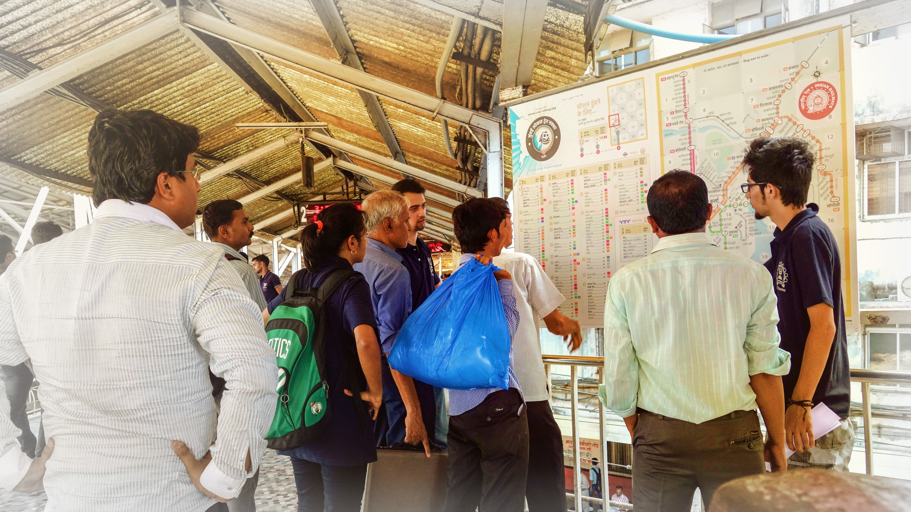
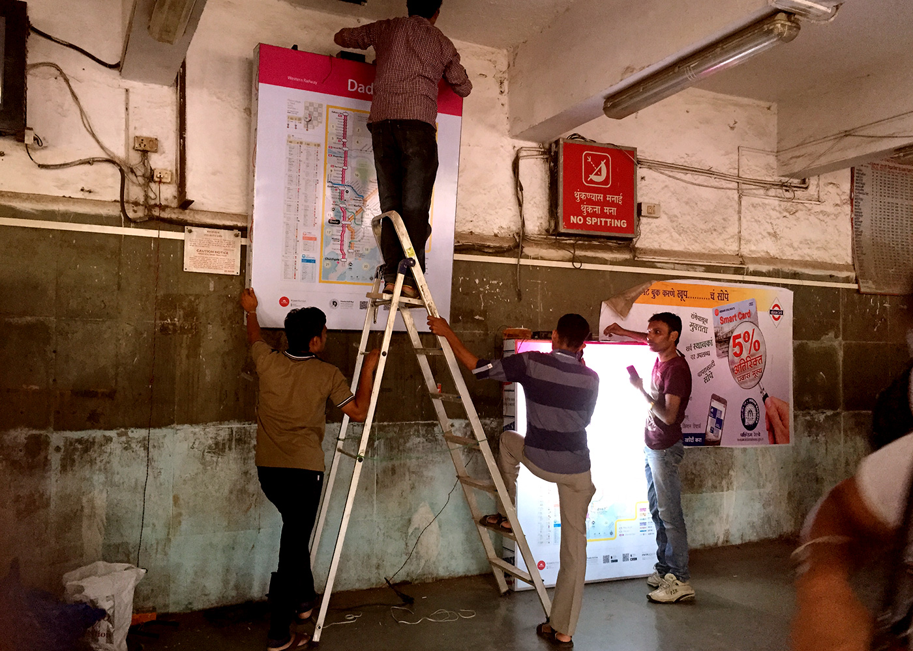

Supported by
Ministry of human resource and development, Govt. of India
Explore more at
www.mrmapp.in
Design of the Mumbai Suburban Rail Map
मुंबई रेल नक्शा . ممبئی ریل کا نقشہ . मुंबई रेल नकाशा . મુંબઈ રેલ નક્શો
Since the first Mumbai Rail Map launch in December 2013, the project has grown due to the perseverance of a motivated team, and the encouragement and feedback from the people of Mumbai. After completing the Version 5 of the Mumbai Rail map, it was tested at Dadar and CST Railways stations with commuters. The current version 6 of the print map included many of the Insights from the user feedback.
The latest version 6 of the MRM are available in Hindi, Marathi, Gujarati, Urdu & English languages
Foldable A5 print map with the index

Pre-project
Thoughts
Need for public information system in Mumbai
Maps are visual representation of information of real or imagined spaces. A map can show the relationship of a particular area with another according to its physical spatial location, direction, distance, size, time, numeric data or other. Maps can be accurate
or distorted, exposing political, economic or any other agenda.
Inform Form,
Information Design: in theory an informed practice 1 2012
Published by Mwm creative pg 30
Visual Maps
Maps are excellent in clarifying the mental model* of novice commuters who are anxious about their travel. Once the mental model is clarified the use of a map reduces, unless a new information- need arises.** Therefore maps are products of infrequent use. Whenever there is a need it should be resolved by the map. If the map is not usable then people might prefer to ask someone. So design of the map must be user friendly and self-evident. Unless everybody (especially children) is taught to read maps at a national level, the anxiety towards map reading and accessing information will persist.
*A mental model is an explanation of someone’s thought process about how something works in the real world. (Source: Wikipedia) **A frequent traveller on the Central Line told us that one weekend he had to travel on Harbour Line to attend a function. We had given him a portable MRM Ver.4. He referred to the MRM because he was not aware of that particular station on the Harbour Line. So the statement, “frequent travellers will not need to refer to a map” is not true. Information should be handy whenever need arises.
December 1st 2013
Discussion
Design of the Mumbai Suburban Rail Map
Design for People
Mumbai suburban rail is one of the busiest rapid transit systems in the world — operating more than 2000 train services and carrying more than 7 million passengers daily. Rail map plays a critical role in providing the travel related information to help commuters navigate and guide them towards informed decision making prior to the journey.
There was no well designed, user-friendly map for the people of Mumbai as well as tourists visiting Mumbai. It was assumed that people don’t require a map to navigate and people manage by asking other people. Nobody had an overview 17 of how is the rail network laid out. A complete overview was necessary to clarify the mental model of the rail commuters. Therefore we thought of designing a map.
Most people argued with us saying, Indians rely on asking around for information, instead of referring to a map. But did we ever give them a map?
Everyone in the city seems to be very confident about the information needed to travel around. As they say that we can ask any one at any point of time whenever needed. In a way its a positive side when we consider the social interaction in a large city like Mumbai. People are considered to be very helpful when it comes to guiding someone on the journey. But the argument arises that the information which is most useful in a scenario like railway stations in Mumbai. Why is it invisible at first place. Moreover Mumbai is generally over loaded with happenings. The crowd is increasing so fast everyday and the need for information along with that. Whenever we travel, why we tend to reconfirm about travel information by asking multiple people the same question. At times we are also mislead by believing some of them. Only if we would have had the minimum information visible on the locations, it can be observed whether they are useful or not. It is public right to be informed about their travel. We have never been given information on the spot and neither anyone bothered that it was actually required. Still we believe that people are there to help every time, we do not require any information which is accessible and available.
if the life is so complex
There are travellers in Mumbai who are so used to local journey as if they are just a part of it. Yet when they been asked for or need to go to a new place in a different train route which is not their frequent route, they become just like a novice traveller in the city. Even they need to ask. And it might be as scary as it is for a first time traveller in Mumbai. The complexity becomes much higher when the new comer can not communicate in the local language with people.
‘‘Some complexity is desirable. When things are too simple, they are also viewed as dull and uneventful. Psychologists have demonstrated that people prefer a middle level of complexity: too simple and we are bored, too complex and we are confused. More- over, the ideal level of complexity is a moving target, because the more expert we become at any subject, the more complexity we prefer. This holds true whether the subject is music or art, detective stories or historical novels, hobbies or movies.‘‘
‘‘When complexity is unavoidable, when it mirrors the complexity of the world or of the tasks that are being done, then it is excusable, understandable, and learn-able. But when things are complicated, when the complexity is the result of poor design with completely arbitrary steps, with no apparent reason, then the result is perplexing, confusing, and frustrating. Poor design leads to the emotional distress we have come to associate with modern technology. Good design can provide a desirable, pleasurable sense of empowerment.’’
‘‘When complexity is unavoidable, when it mirrors the complexity of the world or of the tasks that are being done, then it is excusable, understandable, and learn-able. But when things are complicated, when the complexity is the result of poor design with completely arbitrary steps, with no apparent reason, then the result is perplexing, confusing, and frustrating. Poor design leads to the emotional distress we have come to associate with modern technology. Good design can provide a desirable, pleasurable sense of empowerment.’’
Donald A. Norman (Living with Complexity)
There was no well designed, user-friendly map for the people of Mumbai as well as tourists visiting Mumbai. It was assumed that people don’t require a map to navigate and people manage by asking other people. Nobody had an overview of how is the rail network laid out. A complete overview was necessary to clarify the mental model of the rail commuters.
Therefore we thought of designing a map.
November 2013
Industrial design centre, IIT Bombay
Back in time:
The very first draft of the Mumbai Rail Map
1st iteration
by: Snehal Patil
1st version of the map
Launched through social media and published through various english and regional language news papers

There were many more design decisions to be made. What all information must be on the map? Should there be station numbers or codes? Is the time between stations absolutely necessary? What is the most striking way of differentiating between the fast and slow lines? What kind of a grid must be adopted? Can an index or a legend be avoided? Also, what size should the map be in? All these decisions became discussions and deliberations spread across a period of almost 12 months now, with the first version launched on 1st December, 2013 through Facebook.
This however,
was only the beginning.
May - June 2014
The Story outside the design studio
Testing on the site revealed various issues

User testing done at Dadar central and Mumbai Chhatrapati Shivaji Terminus to check comprehension difficulties in the map
Post completion of Version 5, and getting due permissions from Central Railway, the Mumbai Rail Map (MRM) was tested at Dadar and CST Railway stations. The testing was done with the support of the Central Railway. Thanks to Mukesh Nigam-DRM CR, CPRO-Naraendra A. Patil, PRO-V Chandrashekar CR, GRPF and Railway Police. The Map was installed at foot over bridges on both the stations and the user testing was on 9 May–14 May, 2014.
A team of several students and research associates were present at both these locations. They interacted with the users, who were a mix of regular and novice commuters, and recorded their responses to several task based queries in order to evaluate the utility of the map. They were specifically trying to understand if the users could comprehend the visual clues and the other information while being able to spot their respective destination stations with ease. Time, of course, was of the essence here. Shorter the time taken to spot the stations, the more user friendly the map is. The testing helped us understand how people in India consume information, as many assumed notions that may work in other countries might not work in our culture. Apart from these, there were several valuable inputs given by the regular commuters.

People ignored the legend as they thought it was a part of the Map.
People were confused between the Mono and Metro Rail.
People demanded a Mobile Rail map application along with the map.
60%
of users understood and used the alphabetically ordered index without any external help to use the map
We assume that alphabetical order makes it easier to search for a station in the index and there would be no error. At times the pronunciations can be strange and funny. Two people came to the map, when asked to search for ‘Seawoods’ station they began searching under ‘C’ and said that they could not find it. Certain things seem beyond our control.
70%
of users could find station code and route colour
One NIT graduate who camps and treks regularly, uses maps and has been to Mumbai a few times, wanted to go to Kurla from Dadar. He looked at the Map and figured out; to go to Kurla he will have to take a Kalyan train, he saw the station code K on the map and then on the railway indicator and found the desired train and platform number.
66%
of users were able to find stations using the box number.
Typically an alpha-numeric criss-cross grid is used to search for a station on most international maps. We used a grid to reduce the scan area. But assigned numbers alone to grid divisions (boxes) as it was better understood in comparison to the alpha- numeric grid system that uses both X and Y axes. Eg. Person in the above picture could locate Ghatkopar by using the numeric grid.
Most of the people said that time between stations as an useful feature.
When we arrived at a portable design solution.
It covers all the lines on the network including Mono and Metro lines.
It is designed to address the needs of the colour blind population.
It tells you the time between stations (Most commuters appreciated this feature)
Use of alphabetically ordered index makes it easier for the user to search a station quickly.
Commuters found it difficult to use the alpha-numeric grid used worldwide,
so we introduced the box grid.Improved visual differentiation between fast and slow train lines.
May 2014
The Story
Overview
Documentation of a few user feedback at the stations
January 2015
The Story
Updated
version 6 of the print map
in 5 languages

May 2015
The Story
Installation of the You are here maps at Bandra and Dadar western railway stations
in 3 languages:
English, Hindi and Marathi


May 2015
The Story
Dadar western railway stations
in 3 languages:
English, Hindi and Marathi

Categories
- All Projects
 Mind On
Mind OnIdentity Design . Visual Brand Language
 Mumbai Rail Map
Mumbai Rail MapInformation Design
 My Mumbai My Local
My Mumbai My LocalInformation Design
 Eves 24 Jewells
Eves 24 JewellsIdentity Design . Visual Brand Language
 Karauli Diagnostics
Karauli DiagnosticsIdentity Design . Visual Brand Language
 MrmApp
MrmAppInformation Design
 Olive telecom
Olive telecomIdentity Design . Visual Brand Language
 Go Goa Gone
Go Goa GoneIdentity Design . Film Publicity design
 The Magic
The MagicFiction Short Film
 Bonifate INC.
Bonifate INC.Identity Design . Visual Brand Language
 Cezer . a Shoe with a soul
Cezer . a Shoe with a soulIdentity Design . Visual Brand Language
 White Locus
White LocusIdentity Design
 Bhaag Milkha Bhaag
Bhaag Milkha BhaagIdentity Design . Film Publicity design
 BMJ Awards
BMJ AwardsIdentity Design . Event Branding
 Culture Live
Culture LiveIdentity Design . Event Branding
 Spring Infradev
Spring InfradevIdentity Design . Visual Brand Language